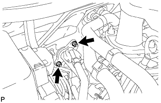
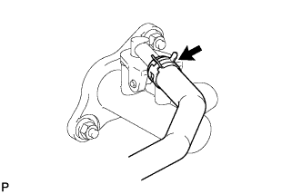
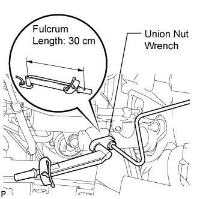
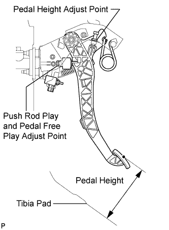

CLUTCH MASTER CYLINDER (for RHD) > INSTALLATION |
| 1. INSTALL CLUTCH MASTER CYLINDER ASSEMBLY |
Install a new gasket to the master cylinder.
Apply MP grease to the contact surface of the clevis and clutch pedal.
 |
Connect the clutch pedal to the clevis, and then install the master cylinder with the 2 nuts.
 |
Tighten the clutch pedal support bolt.
| 2. CONNECT CLUTCH RESERVOIR TUBE |
 |
Connect the clutch reservoir tube with a new clip.
| 3. CONNECT CLUTCH MASTER CYLINDER TO FLEXIBLE HOSE TUBE |
 |
Using a union nut wrench, connect the tube.
| 4. FILL RESERVOIR WITH BRAKE FLUID |
Fill the reservoir with brake fluid.
| 5. BLEED CLUTCH LINE |
 |
Remove the release cylinder bleeder plug cap.
Connect a vinyl tube to the bleeder plug.
Depress the clutch pedal several times, and then loosen the bleeder plug while the pedal is depressed.
When fluid no longer comes out, tighten the bleeder plug, and then release the clutch pedal.
Repeat the previous 2 steps until all the air in the fluid is completely bled.
Tighten the bleeder plug.
Install the bleeder plug cap.
Check that all the air has been bled from the clutch line.
| 6. CHECK FLUID LEVEL IN RESERVOIR |
Check the fluid level.
If the brake fluid level is low, check for leaks and inspect the disc brake pad. If necessary, refill the reservoir with brake fluid after repair or replacement.
| 7. INSPECT FOR CLUTCH FLUID LEAK |
| 8. INSPECT AND ADJUST CLUTCH PEDAL SUB-ASSEMBLY |
 |
Check that the clutch pedal height is correct.
Adjust the clutch pedal height.
Loosen the lock nut and turn the stopper bolt or clutch switch until the height is correct. Tighten the lock nut.
 |
Check that the clutch pedal free play and push rod play are correct.
Depress the clutch pedal until the clutch resistance begins to be felt.
Gently depress the clutch pedal until the resistance begins to increase a little.
Adjust the clutch pedal free play and push rod play.
Loosen the lock nut and turn the push rod until the clutch pedal free play and push rod play are correct.
Tighten the lock nut.
After adjusting the clutch pedal free play and push rod play, check the clutch pedal height.
 |
Check the clutch release point.
Pull the parking brake lever and chock the wheels.
Start the engine and allow it to idle.
Without depressing the clutch pedal, slowly move the shift lever to R until the gears engage.
Gradually depress the clutch pedal and measure the stroke distance from the point that the gear noise stops (release point) up to the full stroke end position.